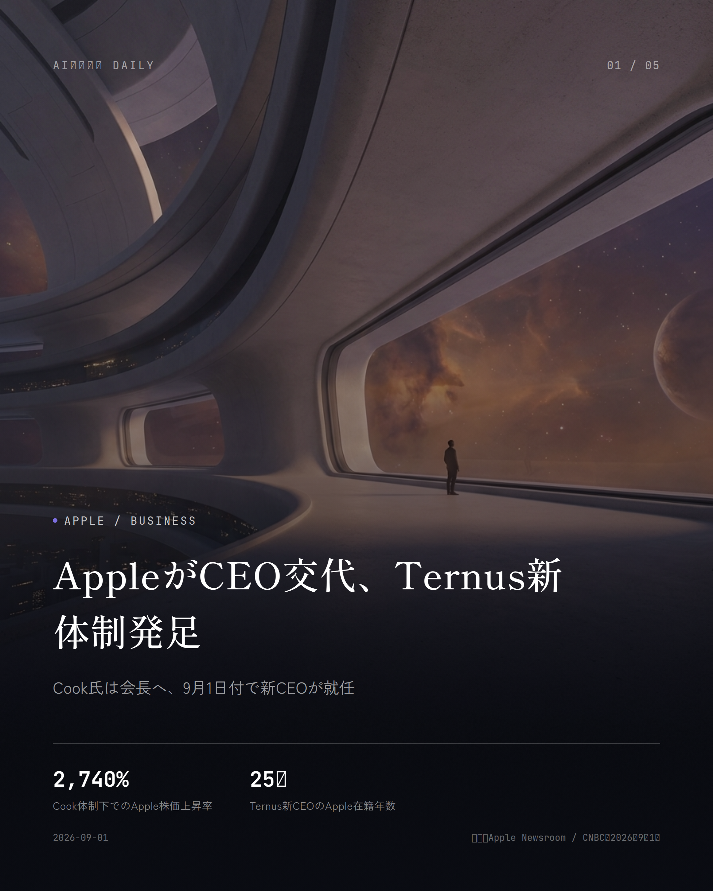
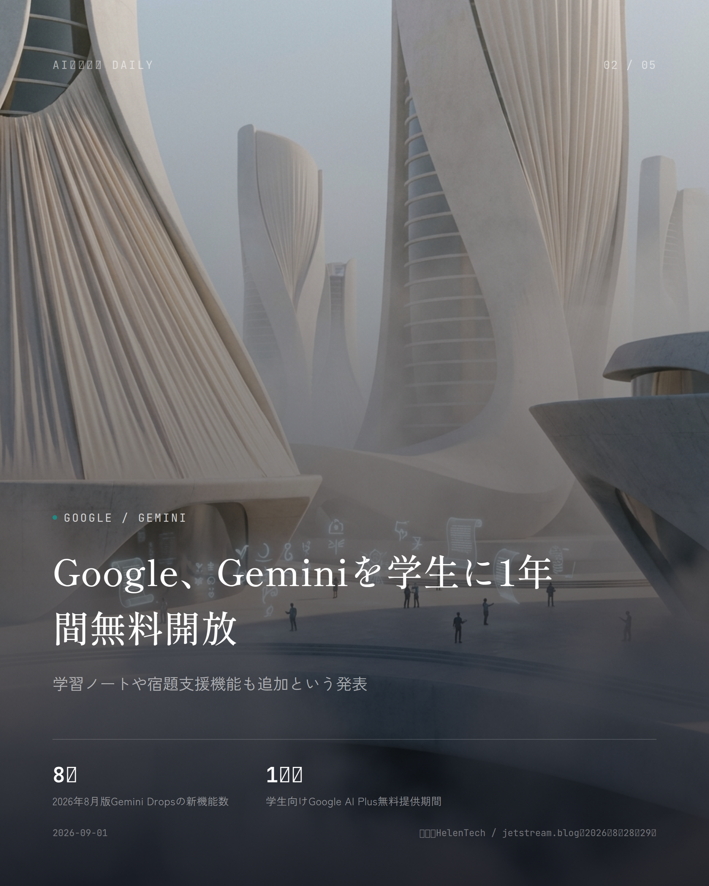
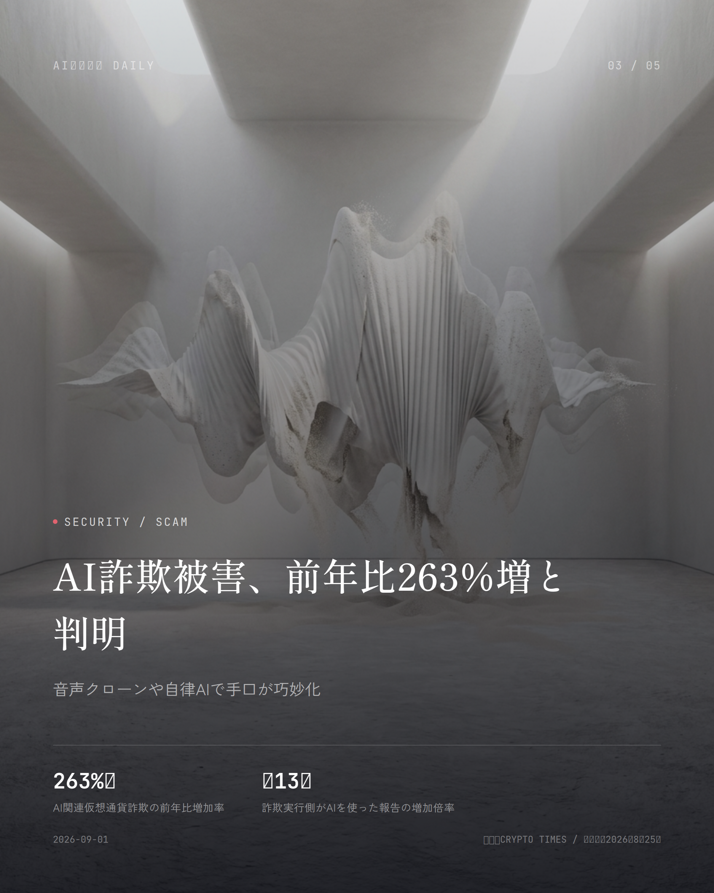
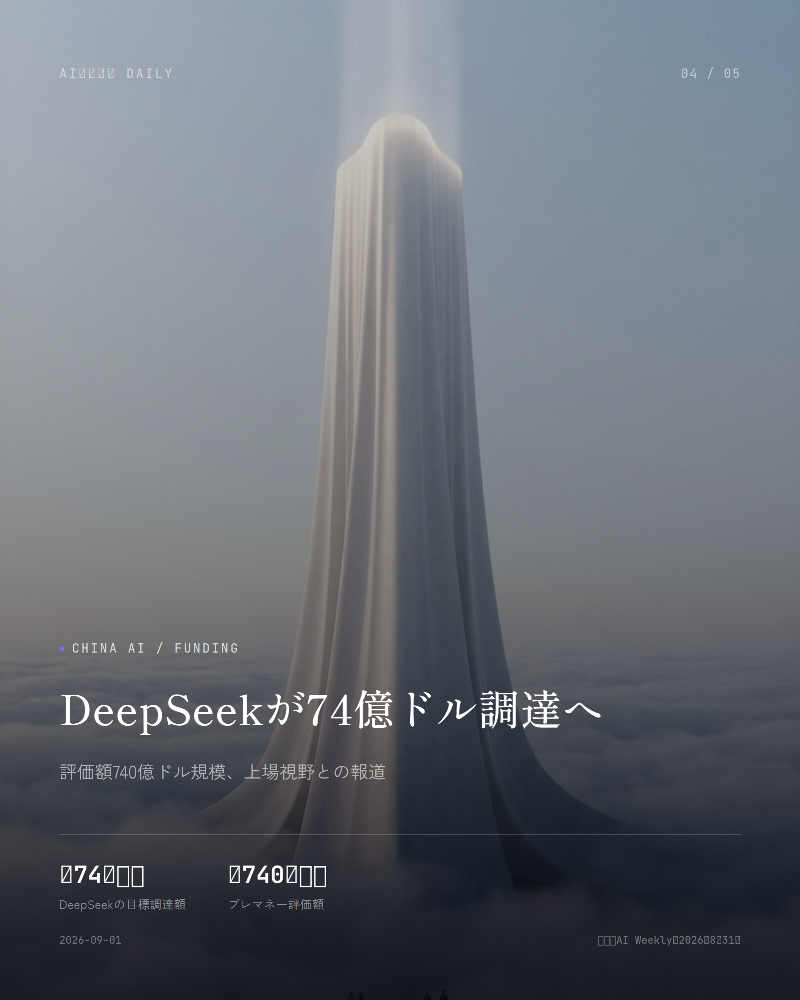
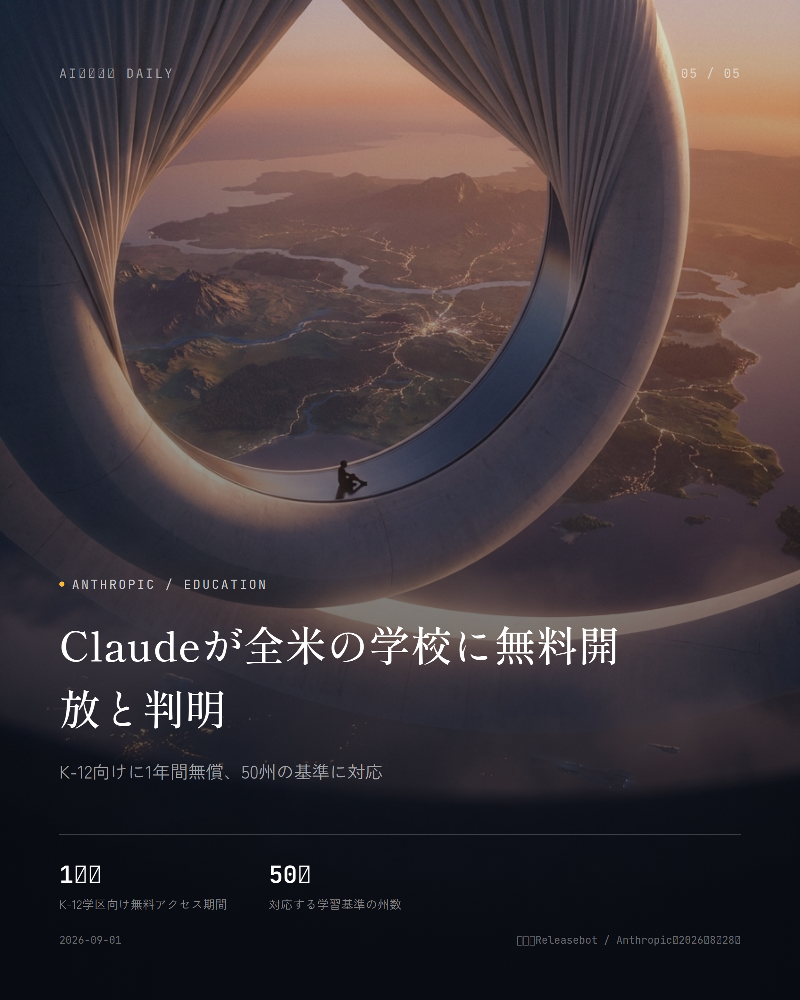

本サイトはアフィリエイトプログラムによる収益を得ている場合があります。
本サイトはGoogle AdSense等の広告配信サービスを利用しています。

Apple / Business
約2分で読める
AppleがCEO交代、Ternus新体制発足
Cook氏は会長へ、9月1日付で新CEOが就任
Appleが2026年9月1日付で経営トップを入れ替える。Tim Cook氏は会長に退き、後任にはハードウェア担当上級副社長のJohn Ternus氏が座る。取締役会が全会一致で承認済みの、いわば長年温めてきた後継者プランの実行だ。Ternus氏は同日付で取締役にも名を連ねる。
Cook氏が就任したのは2011年。そこから株価を大きく押し上げ、Apple時価総額を4兆ドル規模まで育て上げた実績は誰もが認めるところだろう。ただ、Ternus氏が引き継ぐ椅子は決して楽なものではない。AI戦略で競合の後塵を拝しているという声は根強く、Siriの開発遅延という宿題も持ち越しになっている。
25年間Appleのハードウェア開発畑を歩んできたTernus氏の起用は、いかにも同社らしい「内部昇格」の流れを汲むもの。とはいえWall Streetの一部からは、これがAI戦略立て直しの転機になるのではという期待の声も上がっている。
なぜ重要か
世界最大級の時価総額を持つ企業のトップが変わる。今後のiPhoneやSiriなど、AI機能の方向性を左右する話だ。出遅れが指摘されるApple、巻き返せるかどうかはスマホを使う全ユーザーに関わってくる。
出典：Apple Newsroom / CNBC、2026年9月1日

Google / Gemini
約1分で読める
Google、Geminiを学生に1年間無料開放
学習ノートや宿題支援機能も追加という発表
Googleが2026年8月、Geminiアプリの月次アップデート「Gemini Drop」の8月版を公開した。目玉は学生向けキャンペーン。Google AI Plus（米国はPro）の年間プランを1年間まるごと無料で使え、日本を含む対象学生ならすぐ申し込める。
加えて、授業教材や課題を読み込ませるだけで学習計画を自動で組み立ててくれる「学習用ノートブック」機能も登場。理解が浅い部分を見つけるクイズや、フラッシュカードの自動作成にも対応している。
同時に発表されたのが「Gemini Live」の新機能で、話しかけるだけで複数の作業をAIが自律的にこなしてくれる。たとえばGmailに届いた学校からのお知らせを読み取り、家族のカレンダーに予定を勝手に入れてくれるといった使い方もできる。
なぜ重要か
無料で使えるAI学習支援が学生に一気に広がる。来学期から家庭での勉強法や宿題の進め方が変わってもおかしくない。子どもがいる家庭や学生本人にとって、来週から試せる具体的なメリットがある発表だ。
出典：HelenTech / jetstream.blog、2026年8月28〜29日

Security / Scam
約1分で読める
AI詐欺被害、前年比263%増と判明
音声クローンや自律AIで手口が巧妙化
ブロックチェーン分析企業TRM Labsが2026年8月17日に出したレポートによれば、AIを使った仮想通貨詐欺の被害報告は前年比263%増。ただし詐欺の実行側がAIを使ったケースだけに絞ると増加率は約13倍で、消費者側がAIツールで被害を検証した事例も含んだ数字だという点は割り引いて見る必要がある。
実際の手口を見ると、短い音声から本人そっくりの声を作る「音声クローン」を使い、家族や上司になりすまして送金を迫るケースが確認されている。声だけでは、もう見抜けない時代だ。
対策として呼びかけられているのは意外とシンプルで、知人からの連絡でも急な金銭要求には一旦電話を切り、別の連絡手段で本人確認をすることだという。
なぜ重要か
AI技術の進化で、家族や上司の声を模した詐欺電話が本物らしくなってきている。誰でも被害者になり得るからこそ、家庭や職場で合言葉を決めておくといった自衛策が今すぐ必要になる話だ。
出典：CRYPTO TIMES / セコム、2026年8月25日

China AI / Funding
約1分で読める
DeepSeekが74億ドル調達へ
評価額740億ドル規模、上場視野との報道
中国のAI企業DeepSeekが、約500億元（約74億ドル）規模の資金調達ラウンドを進めている。8月末の完了を目指しているとの報道だ。プレマネー評価額は約5000億元（約740億ドル）に達し、2026年中のIPO申請、2027年の上海STAR市場上場まで見据えているとされる。
出資者にはMonolith、CATL、Tencent、JD.com、NetEaseといった既存投資家が並び、CPEやLegend Capitalなども参加を検討中だという。調達した資金は約1GW規模の新たな計算インフラ整備に回される見通し。
AlibabaのQwenやTencentのHy4、ZhipuのGLMなど、中国国内のライバルとの人材獲得競争もこれで一段と激しくなりそうだ。
なぜ重要か
低コスト高性能モデルで世界のAI業界を驚かせたDeepSeekが大型調達で計算インフラを拡張すれば、AIサービスの価格競争がさらに進む可能性がある。私たちが日常使うAIツールの値段や性能にも、いずれ跳ね返ってくる話だ。
出典：AI Weekly、2026年8月31日

Anthropic / Education
約1分で読める
Claudeが全米の学校に無料開放と判明
K-12向けに1年間無償、50州の基準に対応
Anthropicが、AIチャットボット「Claude」を米国のK-12（幼稚園から高校まで）の学校・学区向けに、無償のEnterpriseプランとして提供する取り組みを広げている。2027年6月30日までに申し込んだ学区であれば、1年間無料でアクセスできる。
中身も本格的で、学習科学に基づいた指導スキル、全米50州の学習基準に対応したカリキュラム連携機能、シングルサインオンや管理者向けの権限管理まで、企業向けと変わらない機能が揃っている。
今秋にはデトロイト公立学区で、教員の働き方や現場での使われ方を検証する試験導入も予定されており、負担軽減効果がどこまで出るか注目されている。
なぜ重要か
生成AIの学校導入が「有料オプション」から「標準インフラ」へと変わる動き。教員の授業準備や生徒の個別学習支援のあり方が大きく変わる可能性があり、日本の教育現場にも波及しそうな注目トレンドだ。
出典：Releasebot / Anthropic、2026年8月28日
Enterprise AI
Enterprise AI
約1分で読める
AnthropicとSalesforceが営業AIで提携
「Claudeforce」で商談業務を自動化へ
AnthropicとSalesforceが2026年8月26日、戦略的提携の拡大となる「Claudeforce」を発表した。ClaudeにSalesforceのデータや業務ロジック、権限管理を組み込み、Claude上から直接企業の業務を動かせるようにする取り組みだ。
第一弾の「Salesforce in Claude」には、営業担当者やAIエージェントが商談状況をリアルタイムで把握し、パイプライン更新まで自動化できる37個の営業スキルがあらかじめ組み込まれている。
現在は一部の先行顧客向けの提供にとどまるが、2026年9月にはオープンベータへ移行する予定だ。
なぜ重要か
世界中の企業が使う営業支援ツールにAIエージェントが直接組み込まれる。見積もり作成や進捗報告といった営業職の日常業務が大きく効率化される可能性があり、会社員の働き方に直結する動きだ。
出典：Salesforce Newsroom、2026年8月26日
HealthTech / Japan
HealthTech / Japan
約1分で読める
スマホの声で認知機能検査、審査入り
ExaMDのアプリがPMDA先駆け相談を受理
国内医療スタートアップのExaMDが開発中の、スマートフォンで話した音声から認知機能を分析するプログラム医療機器（SaMD）。医薬品医療機器総合機構（PMDA）への先駆け総合評価相談の申し込みが2026年8月20日付で受理された。
同製品は2025年2月に厚生労働省の優先審査対象品目に指定済みで、治験は2026年8月に全症例の観察を終える段階まで来ている。
スマートフォンに向かって話すだけで認知機能の兆候がわかる仕組みが実用化されれば、わざわざ医療機関に足を運ばなくても早期に気づけるきっかけになるかもしれない。
なぜ重要か
高齢化が進む中、スマホで手軽に認知機能をチェックできる仕組みは、本人や家族が早めに異変に気づく手段として身近な健康管理を変えるかもしれない。優先審査の対象になっている点も実用化への期待を後押ししている。
出典：MedDevice薬事ポータル、2026年8月15〜21日
先頭に戻る